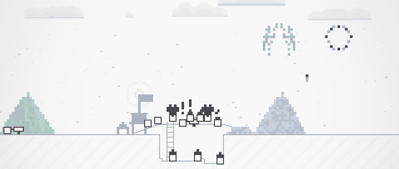
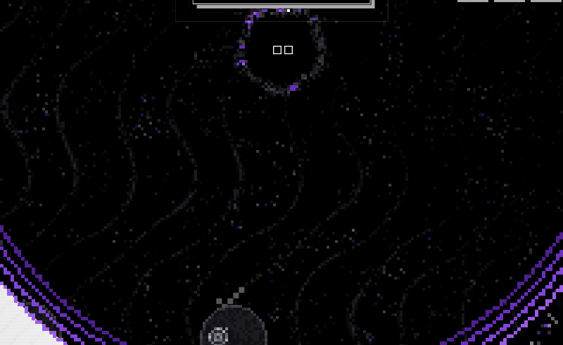
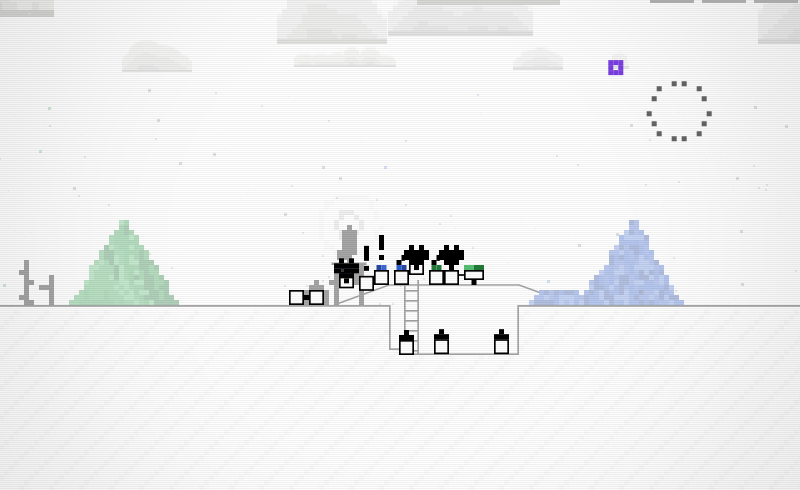
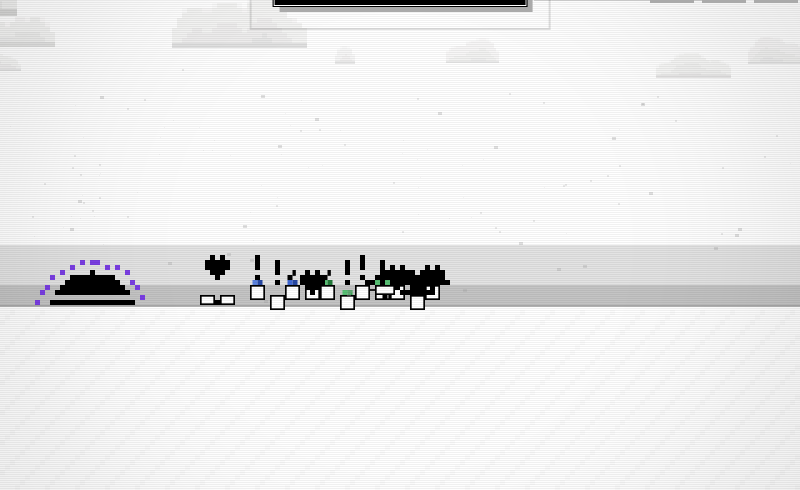
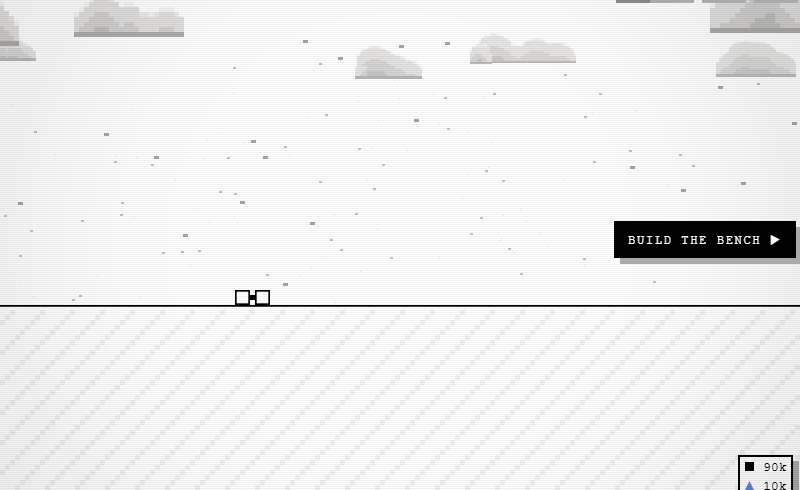

Finale: the house
After the serpent dies: the pair come out of the portal, the whole yard downs tools and falls in behind them, fireworks overhead, and at the end of the walk the builders finish a house just as the pair arrive. They go in, the door shuts, the window lights.
A mock, not the game. Plain shapes on the 6px cell grid in the game's tones, at the yard's real length (1,281 cells, the window 160 wide, the walk 30 seconds). It starts at the yard end of the portal; the deep half is unchanged and not shown. It cannot show: the real sprites, kits, hats, carts and heaps; the real stations (they are grey boxes here); the sim's own paths and timing; the camera's glide and the letterbox; sound; or the closing sheet's words, which are grey bars (the copy is the owner's). The builders' pile is already on the plot when the scene starts; in the game they would carry it there while the deep half plays.
Today
The finale as built, shot from the game (finale-portal, finale-parade, finale-sunset, finale-after), and 4 seconds of the parade at 30 frames a second.





Why the hops look janky
- Too big, too few frames. A hop is four held poses, 0, 1, 2 and 1 cells up, an eighth of a second each. Two cells is 12 px on a body 18 px tall, so each pose jumps by a third of a body, with no crouch before it and no landing after.
- It switches off. A body only hops while it is within one cell of its place in the files. The pair move a whole cell at a time (about 33 cells a second, so a cell every other frame), each place jumps with them, and the body chasing it at 42 cells a second keeps falling more than a cell behind. The hop goes off and on, and the body drops to the ground mid-hop.
- A lockstep pattern. Each body's pose is the shared clock plus its join number, so neighbors are exactly one pose apart and every fourth body matches. It reads as pistons, not a crowd.
- Sliding. Joiners close the gap at 42 cells a second along the ground, not hopping, and the files bunch up where they overtake each other.
Why the quarry and the farm stay at work
- Only bodies that pass
free()in finale.js can fall in: on the yard's own floor, within two cells of the flat way, not inside, not aloft, not in a craft, not homeward. - Everyone else is frozen where they stand for the whole finale (
finaleBodytakes their frame and does nothing), so a body that fails the test once can never come free. - Quarry: down the cut, so
onYardis false. Diggers: on the hill's crest, 13 to 18 cells above the way. Farm: farmhands walk over their plots and heaps (climbTo(walkY)), so one on a bank is more than two cells up. In the shot scene the farmhands happened to be on flat ground and joined, but the quarry's three and the hill's three never did. - Also left behind: wizards aloft, purifiers in a balloon, anyone knocked off inside a shack, haulers down the shaft. Forklifts are machines, not crew, so the finale never sees them.
The ending, mixed
hops
fireworks
at the door
the house stands
afterwards
camera
forklifts
Beats
With the house at the yard's left end. By the shacks the walk is the same 30 seconds over 400 cells, so the pair stroll.
| seconds | beat |
|---|---|
| 0.0 – 1.4 | Out of the drowned pit and onto the near lip, six held steps (as today). |
| 0.6 – 31.0 | At the plot, five builders put the house up a piece a trip: scaffold, three posts, the plates, the walls a board row at a time from the ground up, the roof a row of tiles at a time, the chimney, the door, the window (and the bench if they will sit out), then the scaffold comes down onto a woodpile that stays. 42 or 43 trips; each piece leaves the pile in a builder's hands and is set in place. |
| 1.4 – 31.4 | The walk, the length of the yard. Each body leaves work as the pair come within four cells: climbs out of the cut, comes down the hill, steps out of a shack, the balloon and the wizards come down in held steps. Then it hurries to its place in the files, and starts hopping on its own next beat. |
| 1.9 – 31.4 | Fireworks, one every 1.25 s (the works: quickening to one every 0.55 s near the end). |
| 31.4 | At the door, as the last scaffold pole comes down. The crowd stops in its files, still hopping. |
| 32.0 – 32.5 | The door slides open in four steps on a lit room. |
| 32.6 – 34.4 | She steps up and goes in, dimming into the room. |
| 33.4 – 35.2 | He follows. |
| 35.4 – 35.9 | The door slides shut in four steps. The volley goes up from both sides of the house (if on). |
| 36.2 | The window lights. The heart burst over the house (if the volley is on). |
| 38.4 – 41.0 | The hold: only the last sparks move. |
| 41.0 – 44.0 | The sheet. |
| 44.0 – | Sheet down: the crowd walks back to work, and the pair's afterwards begins, for good. |
Who joins, and how each gets free
| kind | where today | getting free |
|---|---|---|
| diggers | on the hill's crest | walk down its near slope |
| miners | down the cut | walk to the ladder, climb out a cell a step |
| farmers | at the plots, on a bank | a held hop down off the bank |
| haulers, carters | on the way, with carts | at once; carters bring the cart |
| apothecary, scholar, janitors | at their stations | at once |
| purifier | aloft in a balloon | the balloon comes down a cell a step, lands, they hop out; it stays parked |
| wizards | aloft over the tower | float down a cell a step |
| resting | inside a shack | the door opens, they step out |
| builders | at the house | they are the ones building it, so they do not walk; they join the cheer at the door |
| forklift | a machine, not crew | optional: rolls along at the tail |
Questions
- Where does the house stand: the yard's left end, where the pair idle today, or by the crew's shacks as their neighbors? The left end keeps the full walk and passes everyone; by the shacks the workers further left walk over to meet them.
- Should the build be seen during the walk? With the camera on the pair the house only comes into view in the last five seconds. Two short glances at the plot (camera option) show the build going up; the strip under the scene shows it either way.
- The builders' pile: carried down the yard while the deep half plays (out of sight), or a beat of its own before the pair come out?
- Afterwards: do they come out and sit by the door (the bench is built with the house), or stay in with the window lit and the chimney going?
- Forklifts: roll along at the tail, or stay parked?
- Does the yard keep the house and the woodpile for good, even on a new rock?